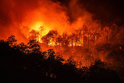

Tsunamis can be identified by the following associated attributes
- Tsunamis initiate following subaquatic perturbations, such as seismic activities, volcanic eruptions, or significant landslides.
- They yield elongated, high-speed oceanic waves.
- These waves exhibit catastrophic potential, inundating coastal regions and inflicting extensive damage.
- Prominently associated with tectonic plate dynamics in marine environments.
- The deployment of sophisticated early warning systems is instrumental in risk mitigation.
Earthquake
Earthquakes can be identified by the following associated attributes
- Earthquakes manifest as abrupt releases of energy within the Earth's crust, resulting in seismic tremors.
- Magnitude varies, encompassing a spectrum from minor tremors to substantial seismic events.
- Induction of structural damage, generation of tsunamis, and provocation of aftershocks is commonplace.
- Tectonic plate movement often underpins seismic events.
- Measurement and assessment of seismic intensity relies upon seismometer instrumentation.
Wildfire

Wildfire can be identified by the following associated attributes
- The ignition of wildfires typically ensues from natural phenomena like lightning strikes or human activities.
- Rapid propagation occurs amid arid, windy conditions.
- Infliction of extensive deforestation, property destruction, and habitat degradation is commonplace.
- Ameliorative efforts involve professional firefighting deployments and preemptive controlled burns.
- Heightened incidence correlates with climate change ramifications.
Landslide
Landslide can be identified by the following associated attributes
- Landslides epitomize the rapid descent of soil, rock, or debris along a terrain gradient.
- Precipitating factors include heightened precipitation, seismic activity, or anthropogenic interventions.
- Prevalent within topographically undulating or mountainous settings.
- Perilous for human habitation, transportation infrastructure, and environmental integrity.
- Prophylactic measures encompass early warning mechanisms and slope stabilization strategies.
Alvalanche
Avalanche can be identified by the following associated attributes
- Avalanches equate to voluminous snow, ice, and debris dislodging downhill.
- Precipitating elements encompass factors like substantial snowfall or anthropogenic movement.
- Predominant in mountainous terrains during the winter season.
- Inherent hazards for skiing, mountaineering, and transportation.
- Proactive risk management entails avalanche forecasting and safety protocols.
| Recorded Tsunamis |
Recorded Earthquakes |
Recorded Wildfires (US only) |
Recorded Landslides |
Recorded Avalanches (US only) |
| 2021: 4 |
2021: 2,206 |
2021: 58,733 |
2021: 16 |
2021: 29 |
| 2020: 2 |
2020: 1,433 |
2020: 58,258 |
2020: 16 |
2020: 19 |
| 2019: 0 |
2019: 1,637 |
2019: 49,786 |
2019: 6 |
2019: 23 |
| 2018: 2 |
2018: 1,808 |
2018: 55,911 |
2018: 9 |
2018: 21 |
| 2017: 1 |
2017: 1,566 |
2017: 66,131 |
2017: 8 |
2017: 12 |
| Citation: Tsunami |
Citation: Earthquake |
Citation: Wildfire |
Citation: Landslide |
Citation: Avalanche |